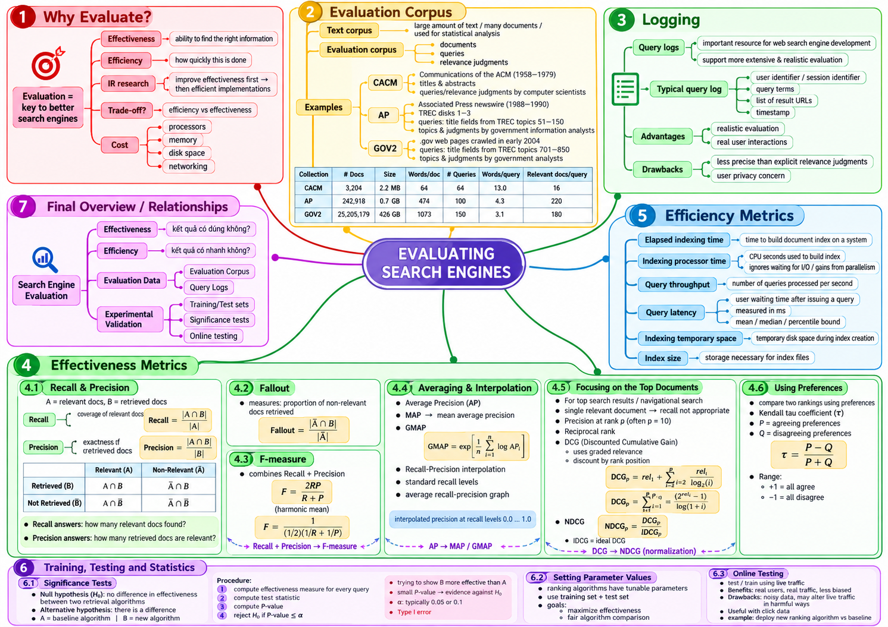

Tài liệu gốc: Slide bài giảng SEG301m Chương 9, "Evaluating Search Engines" (23 slide)
Cách đọc: Chương này hướng dẫn cách đánh giá định lượng chất lượng và hiệu năng của công cụ tìm kiếm. Đánh giá trong IR dựa trên việc thiết lập bộ sưu tập kiểm thử khách quan, tính toán các chỉ số độ chính xác, độ bao phủ, thứ hạng và kiểm định thống kê để khẳng định sự vượt trội có thực sự mang ý nghĩa hay chỉ là ngẫu nhiên.
Mục tiêu của chương
Sau khi học xong chương này, bạn có thể giải thích và tính toán các nội dung sau:
- Trình bày lý do cần đánh giá công cụ tìm kiếm và cấu trúc của một bộ sưu tập kiểm thử (evaluation corpus / test collection).
- Phân tích ưu điểm và hạn chế của việc sử dụng dữ liệu nhật ký truy vấn (query logs) trong đánh giá.
- Tính toán các chỉ số cơ bản: Độ chính xác (Precision), Độ bao phủ (Recall), Tỷ lệ dương tính giả (Fallout) và Điểm F1.
- Tính toán các chỉ số xếp hạng: Precision@k, Average Precision (AP), Mean Average Precision (MAP), Mean Reciprocal Rank (MRR) và NDCG@k.
- Giải thích phương pháp nội suy đường cong Precision-Recall và hệ số tương quan hạng Kendall tau.
- Đo lường các chỉ số hiệu năng (latency, throughput) và thực hiện kiểm định dấu chính xác (exact sign test) để kiểm tra ý nghĩa thống kê.
SLIDE NGUỒN 1-3

Kiến thức cần chuẩn bị
- Nắm vững các mô hình tính điểm xếp hạng từ Chương 7.
- Phân biệt rõ tính hiệu quả (effectiveness - chất lượng kết quả) và tính hiệu năng (efficiency - tốc độ xử lý) từ Chương 2.
- Hiểu khái niệm gán nhãn độ liên quan nhị phân (0 hoặc 1) và đa mức độ (graded relevance từ 0 đến 3).
9.1 Vì sao cần đánh giá công cụ tìm kiếm
SLIDE NGUỒN 4-5
Một công cụ tìm kiếm không thể tự khẳng định mình "tốt hơn" chỉ dựa vào cảm tính của lập trình viên hay một vài câu truy vấn thử nghiệm ngẫu nhiên. Việc đánh giá định lượng là bắt buộc nhằm:
- So sánh khách quan giữa các thuật toán và mô hình xếp hạng khác nhau (ví dụ so sánh BM25 với Mô hình ngôn ngữ).
- Tinh chỉnh các siêu tham số (như
k1,btrong BM25 hoặcμtrong Dirichlet smoothing). - Phát hiện các trường hợp suy thoái chất lượng khi cập nhật thuật toán mới.
- Cân bằng sự đánh đổi giữa chất lượng xếp hạng và thời gian phản hồi máy chủ.
Hai khía cạnh đánh giá luôn đi song hành:
- Đánh giá tính hiệu quả (Effectiveness): Trả lời câu hỏi "kết quả tìm kiếm có đúng và hữu ích với người dùng không?".
- Đánh giá tính hiệu năng (Efficiency): Trả lời câu hỏi "hệ thống chạy có nhanh và tốn ít bộ nhớ không?".
9.2 Bộ sưu tập kiểm thử (Evaluation Corpus / Test Collection)
SLIDE NGUỒN 6-7
Mô hình kiểm thử kinh điển Cranfield chuẩn hóa việc đánh giá thông qua một bộ sưu tập kiểm thử gồm ba thành phần bắt buộc:
- Bộ sưu tập tài liệu chuẩn (Document collection): Tập hợp cố định các văn bản đại diện cho miền tìm kiếm.
- Tập hợp câu truy vấn / nhu cầu thông tin mẫu (Test queries): Danh sách các câu hỏi tiêu biểu đại diện cho hành vi người dùng thực tế.
- Phán đoán độ liên quan (Relevance judgments): Bảng nhãn chuẩn (ground truth) do chuyên gia con người thẩm định, ghi nhận tài liệu nào liên quan đến truy vấn nào.
Trong các kho dữ liệu hàng triệu trang, con người không thể đọc hết từng tài liệu để gán nhãn. Phương pháp gộp kết quả (pooling) lấy top-k kết quả hàng đầu từ nhiều công cụ tìm kiếm khác nhau gộp lại để chuyên gia thẩm định. Các tài liệu nằm ngoài pool thường được coi là không liên quan.
9.3 Nhật ký truy vấn (Query Logs)
SLIDE NGUỒN 8-9
Nhật ký truy vấn ghi lại mã phiên, câu truy vấn, các URL hiển thị, dấu thời gian và lượt nhấp chuột. Đây là nguồn dữ liệu khổng lồ phản ánh hành vi thực tế, hỗ trợ đắc lực cho gợi ý từ khóa, bộ nhớ đệm và thử nghiệm A/B.
Tuy nhiên, lượt nhấp chuột không phải là nhãn độ liên quan chuẩn xác tuyệt đối:
- Thiên lệch vị trí (Position bias): Người dùng có xu hướng bấm vào các kết quả đầu tiên bất kể nội dung bên trong có thực sự hay hay không.
- Chịu ảnh hưởng bởi tiêu đề giật gân và đoạn trích tóm tắt.
- Có nhiều lượt nhấp nhầm rồi bấm nút quay lại ngay (click and bounce).
- Nếu đoạn trích snippet đã giải đáp trọn vẹn câu hỏi, người dùng hoàn toàn thỏa mãn mà không cần nhấp chuột.
- Các tài liệu tốt nhưng bị xếp ở trang sau không bao giờ có cơ hội nhận được lượt nhấp.
Dữ liệu nhật ký chứa thông tin cá nhân riêng tư, do đó cần có chính sách ẩn danh hóa, kiểm soát quyền truy cập và giới hạn thời gian lưu trữ.
Ví dụ đánh giá dùng chung
Dưới đây là tập dữ liệu mẫu phục vụ tính toán xuyên suốt chương. Xét truy vấn Q1 trong kho ngữ liệu gồm N = 20 tài liệu. Chuyên gia xác định có đúng 5 tài liệu liên quan là D1, D3, D4, D6, D9 (các tài liệu còn lại D10 đến D20 đều không liên quan). Hệ thống truy xuất trả về danh sách top 8 tài liệu hàng đầu:
| Thứ hạng | Tài liệu | Độ liên quan nhị phân | Độ liên quan đa mức (0-3) |
|---|---|---|---|
| 1 | D1 | 1 | 3 |
| 2 | D2 | 0 | 0 |
| 3 | D3 | 1 | 2 |
| 4 | D4 | 1 | 1 |
| 5 | D5 | 0 | 0 |
| 6 | D6 | 1 | 2 |
| 7 | D7 | 0 | 0 |
| 8 | D8 | 0 | 0 |
| Chưa lấy | D9 | 1 | 1 |
Quy ước: Độ liên quan đa mức ≥ 1 tương ứng với nhãn nhị phân 1; mức 0 tương ứng với nhãn 0.
Xét top 8 tài liệu được trả về:
TP (True Positive - Đúng được lấy)= 4 (D1, D3, D4, D6).FP (False Positive - Sai bị lấy nhầm)= 4 (D2, D5, D7, D8).FN (False Negative - Đúng bị bỏ sót)= 1 (D9- tài liệu liên quan nhưng không lọt vào top 8).TN (True Negative - Sai không bị lấy)= 11 (D10đếnD20).
9.4 Độ chính xác, Độ bao phủ, Tỷ lệ dương tính giả và Điểm F1
SLIDE NGUỒN 10-11
Độ chính xác (Precision) và Độ bao phủ (Recall)
- Độ chính xác (Precision): Trong số các tài liệu hệ thống trả về, có bao nhiêu phần trăm thực sự liên quan? Mẫu số là tổng số tài liệu được lấy ra.
- Độ bao phủ (Recall): Trong số toàn bộ các tài liệu liên quan tồn tại trong kho, hệ thống đã tìm ra được bao nhiêu phần trăm? Mẫu số là tổng số tài liệu liên quan trong kho (
TP + FN).
Với truy vấn Q1 ở ví dụ mẫu:
Precision = 4 / (4 + 4) = 4 / 8 = 0.500 (50%)
Recall = 4 / (4 + 1) = 4 / 5 = 0.800 (80%)
Tỷ lệ dương tính giả (Fallout)
Fallout đo lường tỷ lệ các tài liệu không liên quan bị hệ thống lấy nhầm ra:
Fallout = 4 / (4 + 11) = 4 / 15 ≈ 0.267.
Cần lưu ý: Fallout không phải là 1 - Precision. Mẫu số của 1 - Precision là số tài liệu được lấy ra (FP / (TP + FP)), còn mẫu số của Fallout là toàn bộ các tài liệu rác trong kho dữ liệu (FP / (FP + TN)).
Điểm F1 (F-measure)
F1 là trung bình điều hòa giữa Precision và Recall. Nếu một trong hai chỉ số quá thấp, F1 sẽ bị kéo tụt xuống rất mạnh:
F1 = (2 × 0.5 × 0.8) / (0.5 + 0.8) = 0.8 / 1.3 ≈ 0.615.
9.5 Các chỉ số đo lường thứ hạng hàng đầu
SLIDE NGUỒN 12-15
Người dùng thường chỉ quan tâm đến trang đầu tiên hoặc top 5 - top 10 kết quả. Do đó, các chỉ số có tính trọng số thứ bậc đóng vai trò quyết định.
Độ chính xác tại vị trí k (Precision@k)
P@k là tỷ lệ tài liệu liên quan trong top k kết quả đầu tiên. Với Q1, trong top 5 kết quả đầu tiên (D1, D2, D3, D4, D5) có đúng 3 tài liệu liên quan (D1, D3, D4), do đó:
P@5 = 3 / 5 = 0.600.
Độ chính xác trung bình (Average Precision - AP)
Average Precision (AP) tính trung bình các giá trị Precision tại các vị trí xuất hiện tài liệu liên quan, chia cho tổng số tài liệu liên quan trong bộ sưu tập (R_total):
Trong Q1, các tài liệu liên quan xuất hiện ở thứ hạng 1, 3, 4, 6:
- Tại hạng 1 (
D1):P@1 = 1 / 1 = 1.000 - Tại hạng 3 (
D3):P@3 = 2 / 3 ≈ 0.667 - Tại hạng 4 (
D4):P@4 = 3 / 4 = 0.750 - Tại hạng 6 (
D6):P@6 = 4 / 6 ≈ 0.667
AP(Q1) = (1.000 + 0.667 + 0.750 + 0.667) / 5
= 3.0833 / 5
≈ 0.6167
Mẫu số chia cho 5 (tổng số tài liệu liên quan) nhằm phạt việc hệ thống bỏ sót tài liệu D9. Nếu chỉ chia cho 4 (số tài liệu lấy được), hình phạt bỏ sót tài liệu sẽ bị biến mất.
Mean Average Precision (MAP) và GMAP
Xét truy vấn thứ hai Q2 có R_total = 3, tài liệu liên quan xuất hiện ở hạng 2 và 5:
AP(Q2) = (1/2 + 2/5) / 3 = 0.900 / 3 = 0.3000.
Mean Average Precision (MAP) là trung bình số học của AP trên toàn bộ tập các câu truy vấn:
MAP = (AP(Q1) + AP(Q2)) / 2 = (0.6167 + 0.3000) / 2 ≈ 0.4583
Slide 12 nhắc đến biến thể GMAP (Geometric Mean Average Precision) lấy trung bình nhân bằng cách lấy hàm mũ của trung bình logarit:
GMAP phạt rất nặng các câu truy vấn có kết quả tồi tệ (AP gần bằng 0), giúp đánh giá độ ổn định tổng thể của hệ thống.
Nghịch đảo thứ hạng đầu tiên và MRR (Mean Reciprocal Rank)
Chỉ số Reciprocal Rank (RR) lấy nghịch đảo vị trí của tài liệu liên quan đầu tiên:
- Với Q1, tài liệu đúng đầu tiên nằm ở hạng 1:
RR = 1 / 1 = 1.0. - Với Q2, tài liệu đúng đầu tiên nằm ở hạng 2:
RR = 1 / 2 = 0.5. MRR = (1.0 + 0.5) / 2 = 0.750.
MRR rất thích hợp cho các tác vụ tìm kiếm điều hướng (navigational search) hoặc hệ thống hỏi đáp (QA) nơi người dùng chỉ cần một câu trả lời đúng đầu tiên.
DCG, IDCG và NDCG (Normalized Discounted Cumulative Gain)
Khi tài liệu có nhiều mức độ liên quan khác nhau (từ 0 đến 3), các chỉ số nhị phân không còn phản ánh trọn vẹn chất lượng. Chỉ số DCG sử dụng hàm tăng (gain) 2^rel - 1 kết hợp độ chiết khấu vị trí log2(i + 1):
Dãy nhãn độ liên quan thực tế của Q1 ở top 5 là [3, 0, 2, 1, 0]:
DCG@5 = (2^3 - 1)/log2(2) + (2^0 - 1)/log2(3) + (2^2 - 1)/log2(4) + (2^1 - 1)/log2(5) + (2^0 - 1)/log2(6)
= 7 / 1 + 0 + 3 / 2 + 1 / log2(5) + 0
= 7 + 0 + 1.5000000000 + 0.4306765581 + 0
= 8.9306765581
Để chuẩn hóa, ta tính IDCG (Ideal DCG) bằng cách sắp xếp các tài liệu có điểm cao nhất của truy vấn đó theo thứ tự lý tưởng giảm dần. Toàn bộ các tài liệu có nhãn liên quan dương của Q1 là: D1 = 3, D3 = 2, D6 = 2, D4 = 1, D9 = 1. Do đó, dãy 5 tài liệu lý tưởng hàng đầu là [3,2,2,1,1]:
IDCG@5 = 7/log2(2) + 3/log2(3) + 3/log2(4) + 1/log2(5) + 1/log2(6)
= 7 + 1.8927892607 + 1.5000000000 + 0.4306765581 + 0.3868528072
= 11.2103186260
Chỉ số chuẩn hóa:
NDCG@5 = DCG@5 / IDCG@5 = 8.9306765581 / 11.2103186260 ≈ 0.7966478792
Tài liệu D9 dù không xuất hiện trong top 8 kết quả thực tế của hệ thống, nhưng vì là tài liệu có liên quan tồn tại trong kho nên bắt buộc phải có mặt trong danh sách lý tưởng để tính IDCG. Nhờ chuẩn hóa chia cho IDCG lý tưởng, giá trị NDCG luôn nằm trong khoảng [0, 1] và có thể so sánh công bằng giữa các câu truy vấn khác nhau.
9.6 Nội suy Precision và Recall
SLIDE NGUỒN 13
Khi duyệt xuống danh sách kết quả, đồ thị biểu diễn Precision theo Recall thường biến thiên răng cưa lên xuống không đều. Đường cong Precision-Recall nội suy (interpolated precision) lấy giá trị Precision cực đại đạt được tại mọi mức Recall lớn hơn hoặc bằng mức r đang xét:
Tại 4 điểm xuất hiện tài liệu liên quan của Q1:
| Thứ hạng | Recall | Precision thực tế |
|---|---|---|
| 1 | 0.2 | 1.000 |
| 3 | 0.4 | 0.667 |
| 4 | 0.6 | 0.750 |
| 6 | 0.8 | 0.667 |
Tại mức Recall = 0.4, các giá trị Precision phía sau là [0.667, 0.750, 0.667], giá trị cực đại là 0.750.
Tại mức Recall = 0.6, cực đại là 0.750.
Vì mức Recall tối đa đạt được là 0.8, nên tại mốc Recall = 1.0, giá trị nội suy quy ước là 0:
| Mốc Recall chuẩn | 0.0 | 0.2 | 0.4 | 0.6 | 0.8 | 1.0 |
|---|---|---|---|---|---|---|
| Precision nội suy | 1.000 | 1.000 | 0.750 | 0.750 | 0.667 | 0.000 |
9.7 Hệ số tương quan hạng Kendall tau
SLIDE NGUỒN 16
Hệ số Kendall tau đo lường mức độ đồng thuận thứ tự giữa hai danh sách xếp hạng khác nhau đối với cùng một tập tài liệu. Khi không có các cặp hòa điểm (ties), công thức tính là:
P: số lượng cặp thuận nghịch (concordant pairs) - cả hai danh sách đều xếp thứ tự tương đối giống nhau.Q: số lượng cặp nghịch đảo (discordant pairs) - hai danh sách đảo ngược thứ tự tương đối của cặp tài liệu.
Xét 4 tài liệu {A, B, C, D}: Danh sách 1 xếp A > B > C > D, Danh sách 2 xếp B > A > D > C. Tổng cộng có 4 × 3 / 2 = 6 cặp tài liệu:
| Cặp tài liệu | Danh sách 1 | Danh sách 2 | Đánh giá |
|---|---|---|---|
| (A, B) | A > B | B > A | Nghịch đảo (Q) |
| (A, C) | A > C | A > C | Thuận chiều (P) |
| (A, D) | A > D | A > D | Thuận chiều (P) |
| (B, C) | B > C | B > C | Thuận chiều (P) |
| (B, D) | B > D | B > D | Thuận chiều (P) |
| (C, D) | C > D | D > C | Nghịch đảo (Q) |
Có P = 4 và Q = 2, hệ số tương quan:
τ = (4 − 2) / (4 + 2) = 2 / 6 ≈ 0.333.
Hệ số Kendall tau nhận giá trị từ -1 (hoàn toàn ngược nhau) đến +1 (hoàn toàn trùng khớp).
9.8 Chỉ số hiệu năng (Efficiency Metrics)
SLIDE NGUỒN 17
Đánh giá hệ thống tìm kiếm bắt buộc phải đo lường song song cả các chỉ số tài nguyên và tốc độ:
| Chỉ số hiệu năng | Đơn vị đo tiêu biểu | Ý nghĩa đo lường | Điều kiện đo chuẩn |
|---|---|---|---|
| Thời gian lập chỉ mục (Elapsed time) | Giây, Giờ | Thời gian thực tế để xây dựng xong chỉ mục | Cố định tập ngữ liệu, cấu hình ổ đĩa, số luồng |
| Thời gian CPU (Processor time) | CPU giây | Tổng thời gian tiêu thụ thực tế của vi xử lý | Tách biệt với thời gian chờ I/O |
| Thông lượng truy vấn (Throughput) | Queries / giây (QPS) | Số lượng truy vấn hệ thống xử lý được trong 1 giây | Cố định số lượng kết nối đồng thời |
| Độ trễ truy vấn (Query latency) | Mili-giây (ms) | Thời gian phản hồi cho từng câu truy vấn | Cần báo cáo cả trung vị, p95 và p99 |
| Dung lượng đĩa tạm thời | Gigabyte (GB) | Dung lượng ổ đĩa dùng cho các tệp tạm khi trộn khối | Phụ thuộc thuật toán nén và bộ nhớ đệm |
| Dung lượng chỉ mục hoàn chỉnh | Gigabyte (GB) | Kích thước lưu trữ cuối cùng của chỉ mục đảo | Đầy đủ các trường và thông tin vị trí |
Độ trễ và thông lượng có mối quan hệ đánh đổi: nếu gom truy vấn thành từng lô lớn (batching) để tăng thông lượng tổng thì độ trễ của từng người dùng đơn lẻ sẽ bị kéo dài.
9.9 Phân chia dữ liệu: Huấn luyện, Kiểm định và Kiểm thử
SLIDE NGUỒN 20
| Tập dữ liệu | Mục đích sử dụng | Điều cấm kỵ |
|---|---|---|
| Tập huấn luyện (Training) | Khớp tham số trọng số của mô hình | Báo cáo kết quả trên tập này làm hiệu năng cuối cùng |
| Tập kiểm định (Validation / Dev) | Tinh chỉnh siêu tham số, chọn lọc đặc trưng | Coi đây là dữ liệu chưa biết sau khi đã nhìn nhiều lần |
| Tập kiểm thử (Test) | Đo lường hiệu năng cuối cùng một lần duy nhất | Nhìn kết quả test rồi quay lại điều chỉnh tham số |
Việc phân chia phải thực hiện theo đơn vị câu truy vấn (query-level split), đảm bảo không để các câu truy vấn giống nhau hoặc biến thể gần lọt vào cả hai tập.
9.10 Kiểm định ý nghĩa thống kê
SLIDE NGUỒN 18-19
Khi so sánh Hệ thống A và Hệ thống B trên cùng một tập truy vấn mẫu:
- Giả thuyết không (Null hypothesis - H0): Không có sự khác biệt thực sự về hiệu quả giữa A và B; sự chênh lệch quan sát được chỉ là do biến động ngẫu nhiên.
- Giả thuyết đối (Alternative hypothesis - H1): Có sự khác biệt thực sự giữa hai hệ thống.
- Mức ý nghĩa
α: Ngưỡng xác suất ấn định trước (thường là 0.05) để đưa ra quyết định bác bỏ H0. - Giá trị p (p-value): Xác suất quan sát thấy sự chênh lệch lớn bằng hoặc hơn mức thực tế nếu giả định H0 là đúng.
Giá trị p không phải là "xác suất H0 đúng" và cũng không phải là "xác suất thuật toán B tốt hơn A".
Ví dụ kiểm định dấu chính xác (Exact Sign Test)
Xét hiệu số Average Precision B - A trên 10 câu truy vấn:
+0.04, +0.03, +0.05, -0.01, +0.02,
+0.01, +0.04, -0.02, +0.03, +0.02
Hệ thống B thắng 8 câu, thua 2 câu; mức chênh lệch trung bình là +0.021. Không có câu nào hòa.
Theo kiểm định dấu hai phía với biến ngẫu nhiên nhị thức X ~ Binomial(10, 0.5) dưới giả thuyết H0 (xác suất thắng/thua bằng 0.5):
p = 2 × P(X ≥ 8)
= 2 × [C(10, 8) + C(10, 9) + C(10, 10)] / 2^10
= 2 × [45 + 10 + 1] / 1024
= 112 / 1024
= 0.109375
Với mức ý nghĩa α = 0.05, vì p = 0.109375 > 0.05, chúng ta chưa đủ bằng chứng thống kê để bác bỏ giả thuyết H0. Điều này không có nghĩa là "đã chứng minh A và B giống hệt nhau", mà chỉ có nghĩa là kích thước mẫu 10 truy vấn chưa đủ độ mạnh thống kê để khẳng định chắc chắn sự khác biệt.
9.11 Thử nghiệm trực tuyến (Online Testing)
SLIDE NGUỒN 21
Trong thử nghiệm A/B (A/B testing), người dùng thật được phân bổ ngẫu nhiên vào nhóm kiểm chứng A hoặc nhóm thử nghiệm B. Hệ thống đo lường các chỉ số hành vi thực tế: tỷ lệ nhấp (CTR), tỷ lệ hoàn thành tác vụ, doanh thu và thời gian phản hồi.
Thử nghiệm A/B phản ánh chính xác tác động người dùng thật nhưng tốn kém và tiềm ẩn rủi ro làm giảm trải nghiệm của người dùng nếu thuật toán mới gặp lỗi. Vì vậy, chỉ những mô hình đã vượt qua khâu đánh giá ngoại tuyến (offline evaluation) khắt khe mới được đưa vào thử nghiệm A/B trực tuyến.
Bài tập cuối chương: Phân tích truy vấn đa nghĩa
SLIDE NGUỒN 22
Mục tiêu bài tập: Khảo sát các câu truy vấn đa nghĩa như jaguar, windows, hello, charles clarke trên công cụ tìm kiếm Web thương mại để xem top 10 kết quả phân bổ cho bao nhiêu nét nghĩa khác nhau:
| Câu truy vấn | Các nét nghĩa và đối tượng có thể có | Hạng mục cần theo dõi trong top 10 |
|---|---|---|
jaguar |
Loài báo đốm, hãng xe ô tô Jaguar, đội thể thao, hệ điều hành | Số lượng kết quả thuộc từng nghĩa, quảng cáo đi kèm |
windows |
Hệ điều hành Microsoft Windows, cửa sổ nhà, dịch vụ lắp kính | Phân loại theo informational / navigational / transactional |
hello |
Lời chào hỏi, bài hát của Adele, phim ảnh, chương trình Hello World | Phân biệt danh từ chung với tên tác phẩm cụ thể |
charles clarke |
Chính trị gia, nhà khoa học máy tính, nhân vật lịch sử | Cơ quan công tác, năm hoạt động để phân biệt người trùng tên |
Các bước thực hiện
- Ghi lại thời điểm, vị trí địa lý, ngôn ngữ và trạng thái đăng nhập.
- Tách biệt kết quả quảng cáo và kết quả tự nhiên.
- Xác định nét nghĩa chủ đạo của từng kết quả trong top 10.
- Thống kê số lượng kết quả cho từng nét nghĩa và số lượng nét nghĩa phân biệt xuất hiện.
Xem gợi ý trả lời
Nếu trong top 10 của jaguar có 6 trang về ô tô, 3 trang về động vật và 1 trang về đội bóng, kết quả đã bao phủ 3 nét nghĩa khác nhau. Tỷ lệ này phản ánh cách công cụ tìm kiếm đa dạng hóa kết quả để đáp ứng các nhu cầu khác nhau khi người dùng gõ từ khóa mơ hồ.
Tổng kết
SLIDE NGUỒN 23
- Bộ sưu tập kiểm thử chuẩn gồm tập tài liệu, tập truy vấn và bảng nhãn độ liên quan là nền tảng của đánh giá truy xuất thông tin.
- Nhật ký truy vấn cung cấp dữ liệu hành vi người dùng quy mô lớn nhưng bị thiên lệch vị trí và không phải là nhãn chân lý tuyệt đối.
- Precision và Recall đo lường hai góc nhìn bổ trợ nhau; Fallout đo lường tỷ lệ lấy nhầm tài liệu rác và không đồng nhất với
1 - Precision. - AP tổng hợp chất lượng của một truy vấn; MAP lấy trung bình trên nhiều truy vấn; MRR đo lường tốc độ tìm ra kết quả đúng đầu tiên.
- DCG và NDCG đánh giá xếp hạng trên thang đo đa mức độ kết hợp độ chiết khấu logarit theo vị trí.
- Hiệu năng hệ thống cần được đo lường tách bạch qua độ trễ, thông lượng, bộ nhớ và không gian đĩa.
- Phân chia dữ liệu train/dev/test ngăn ngừa rò rỉ thông tin; các phép kiểm định thống kê giúp xác minh sự tiến bộ có thực sự đáng tin cậy.
Câu hỏi tự kiểm tra
- Vì sao không thể tự ý coi các tài liệu nằm ngoài danh sách gộp (pool) chắc chắn 100% là tài liệu không liên quan?
- Mẫu số của chỉ số Fallout và mẫu số của
1 - Precisionkhác nhau như thế nào? - Average Precision (AP) và Mean Average Precision (MAP) lấy trung bình trên những đơn vị nào?
- Việc chỉ số Reciprocal Rank (RR) chỉ nhìn vào tài liệu đúng đầu tiên tạo ra hạn chế gì?
- Vì sao tài liệu liên quan không được lấy ra (như
D9) vẫn ảnh hưởng trực tiếp tới giá trị IDCG? - Nếu giá trị p thu được từ kiểm định là
p = 0.03, liệu có thể khẳng định rằng "thuật toán B có 97% xác suất vượt trội hơn A" không?
Xem đáp án gợi ý
- Vì tài liệu đó chỉ đơn thuần là không lọt vào top kết quả của các hệ thống được chọn vào pool nên chưa được chuyên gia đọc thẩm định; nội dung thực tế của nó hoàn toàn có thể vẫn chứa thông tin liên quan.
- Mẫu số của Fallout là toàn bộ các tài liệu không liên quan trong toàn bộ kho dữ liệu (
FP + TN); mẫu số của1 - Precisionlà tổng số tài liệu mà hệ thống đã lấy ra (FP + TP). - AP lấy trung bình các giá trị precision tại các vị trí tài liệu đúng bên trong một câu truy vấn; MAP lấy trung bình các giá trị AP trên toàn bộ tập hợp các câu truy vấn.
- RR không phân biệt được chất lượng của phần còn lại của danh sách: một hệ thống trả về duy nhất 1 tài liệu đúng ở top 1 rồi toàn rác phía sau vẫn nhận điểm RR bằng 1 hệt như một hệ thống trả về 10 tài liệu xuất sắc liên tiếp.
- Vì IDCG là thước đo lý tưởng tính trên toàn bộ các tài liệu liên quan có trong kho dữ liệu; việc bỏ sót tài liệu đúng sẽ làm giảm điểm DCG thực tế so với mẫu số IDCG lý tưởng, qua đó phạt đúng mức sự thiếu sót của hệ thống.
- Hoàn toàn không được diễn giải như vậy. Giá trị
p = 0.03chỉ biểu thị rằng: nếu giả định hai hệ thống không có sự khác biệt (H0 đúng) thì xác suất quan sát thấy sự chênh lệch lớn như thực nghiệm chỉ là 3%.
Chuyển tiếp sang chương sau
Đánh giá chất lượng không chỉ áp dụng cho xếp hạng văn bản mà còn áp dụng cho các bài toán phân loại và tổ chức dữ liệu. Chương 10 tiếp theo sẽ nghiên cứu các thuật toán Phân loại (Classification: Naive Bayes, SVM) và Phân cụm (Clustering: Phân cấp, K-means) cùng các ma trận nhầm lẫn và độ tinh khiết (Purity).
Bảng thuật ngữ
| English | Tiếng Việt | Ý nghĩa trong chương này |
|---|---|---|
| Test collection | Bộ sưu tập kiểm thử | Bộ dữ liệu chuẩn hóa gồm tài liệu, truy vấn và nhãn liên quan |
| Relevance judgment | Phán đoán độ liên quan | Nhãn đánh giá mức độ hữu ích của tài liệu đối với câu truy vấn |
| Precision | Độ chính xác | Tỷ lệ tài liệu liên quan trong số các tài liệu lấy ra |
| Recall | Độ bao phủ | Tỷ lệ tài liệu liên quan tìm được trên tổng số tài liệu đúng có trong kho |
| Fallout | Tỷ lệ dương tính giả | Tỷ lệ tài liệu không liên quan bị hệ thống lấy nhầm |
| F1 | Điểm F1 | Trung bình điều hòa giữa Precision và Recall |
| Precision@k | Độ chính xác tại top k | Tỷ lệ tài liệu liên quan trong k kết quả đầu tiên |
| Average Precision | Độ chính xác trung bình (AP) | Chỉ số tổng hợp chất lượng xếp hạng của một câu truy vấn |
| MAP | Mean Average Precision (MAP) | Trung bình số học của các điểm AP trên toàn bộ các câu truy vấn |
| Reciprocal Rank | Nghịch đảo thứ hạng (RR) | Nghịch đảo vị trí của tài liệu liên quan đầu tiên tìm thấy |
| MRR | Mean Reciprocal Rank (MRR) | Trung bình điểm RR trên toàn bộ các câu truy vấn |
| DCG | Độ tăng tích lũy chiết khấu | Chỉ số cộng dồn độ liên quan đa mức có chiết khấu theo vị trí |
| NDCG | Độ tăng tích lũy chiết khấu chuẩn hóa | Tỷ lệ giữa DCG thực tế và IDCG lý tưởng |
| Kendall tau | Hệ số Kendall tau | Thước đo mức độ đồng thuận thứ tự tương đối giữa hai danh sách |
| Query latency | Độ trễ truy vấn | Thời gian hệ thống xử lý và phản hồi cho một câu truy vấn |
| Query throughput | Thông lượng truy vấn | Số lượng câu truy vấn hệ thống xử lý được trong một đơn vị thời gian |
| Null hypothesis | Giả thuyết không (H0) | Giả thuyết cho rằng không có sự khác biệt thực sự giữa hai hệ thống |
| P-value | Giá trị p | Xác suất quan sát thấy chênh lệch lớn như thực tế nếu giả thuyết H0 đúng |